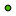

<!doctype html>
<html lang="en">
    <head>
        <meta charset="utf-8">
        <meta http-equiv="X-UA-Compatible" content="IE=edge">
        <meta name="viewport" content="initial-scale=1,user-scalable=no,maximum-scale=1,width=device-width">
        <meta name="mobile-web-app-capable" content="yes">
        <meta name="apple-mobile-web-app-capable" content="yes">
        <link rel="stylesheet" href="css/leaflet.css" />
        <link rel="stylesheet" type="text/css" href="css/qgis2web.css">
        <link rel="stylesheet" href="css/MarkerCluster.css" />
        <link rel="stylesheet" href="css/MarkerCluster.Default.css" />
        <link rel="stylesheet" href="css/leaflet-search.css" />
        <style>
        html, body, #map {
            width: 100%;
            height: 100%;
            padding: 0;
            margin: 0;
        }
        </style>
        <title></title>
    </head>
    <body>
        <div id="map">
        </div>
        <script src="js/qgis2web_expressions.js"></script>
        <script src="js/leaflet.js"></script>
        <script src="js/leaflet-heat.js"></script>
        <script src="js/leaflet.rotatedMarker.js"></script>
        <script src="js/OSMBuildings-Leaflet.js"></script>
        <script src="js/leaflet-hash.js"></script>
        <script src="js/leaflet-tilelayer-wmts.js"></script>
        <script src="js/Autolinker.min.js"></script>
        <script src="js/leaflet.markercluster.js"></script>
        <script src="js/leaflet-search.js"></script>
        <script src="data/hieroklesdiocesesOGRGeoJSONMultiPolygon0.js"></script>
        <script src="data/hieroklesdioceseslinesOGRGeoJSONMultiLineString1.js"></script>
        <script src="data/hieroklesprovincesOGRGeoJSONMultiLineString2.js"></script>
        <script src="data/hieroklesplacesOGRGeoJSONPoint3.js"></script>
        <script>
        L.ImageOverlay.include({
            getBounds: function () {
                return this._bounds;
            }
        });
        var map = L.map('map', {
            zoomControl:true, maxZoom:28, minZoom:1
        }).fitBounds([[23.9486622197,16.7301231972],[45.7905714581,42.8418793543]]);
       
       L.control.scale().addTo(map);

       
        var hash = new L.Hash(map);
        map.attributionControl.addAttribution('<a href="https://github.com/tomchadwin/qgis2web" target="_blank">qgis2web</a>');
        var bounds_group = new L.featureGroup([]);
        var basemap0 = L.tileLayer('http://stamen-tiles-a.a.ssl.fastly.net/terrain-background/{z}/{x}/{y}.png', {
            attribution: 'Map tiles by <a href="http://stamen.com">Stamen Design</a>, <a href="http://creativecommons.org/licenses/by/3.0">CC BY 3.0</a> &mdash; Map data &copy; <a href="http://www.openstreetmap.org/copyright">OpenStreetMap</a>',
            maxZoom: 28
        });
        basemap0.addTo(map);
        function setBounds() {
        }
        function geoJson2heat(geojson, weight) {
          return geojson.features.map(function(feature) {
            return [
              feature.geometry.coordinates[1],
              feature.geometry.coordinates[0],
              feature.properties[weight]
            ];
          });
        }
        function pop_hieroklesdiocesesOGRGeoJSONMultiPolygon0(feature, layer) {
            var popupContent = '<table>\
                    <tr>\
                        <td colspan="2">' + (feature.properties['Id'] !== null ? Autolinker.link(String(feature.properties['Id'])) : '') + '</td>\
                    </tr>\
                    <tr>\
                        <td colspan="2">' + (feature.properties['Title'] !== null ? Autolinker.link(String(feature.properties['Title'])) : '') + '</td>\
                    </tr>\
                </table>';
            layer.bindPopup(popupContent);
        }

        function style_hieroklesdiocesesOGRGeoJSONMultiPolygon0() {
            return {
                pane: 'pane_hieroklesdiocesesOGRGeoJSONMultiPolygon0',
                opacity: 1,
                color: 'rgba(0,0,0,1.0)',
                dashArray: '',
                lineCap: 'butt',
                lineJoin: 'miter',
                weight: 1.0, 
                fillOpacity: 1,
                fillColor: 'rgba(126,142,76,1.0)',
            }
        }
        map.createPane('pane_hieroklesdiocesesOGRGeoJSONMultiPolygon0');
        map.getPane('pane_hieroklesdiocesesOGRGeoJSONMultiPolygon0').style.zIndex = 400;
        map.getPane('pane_hieroklesdiocesesOGRGeoJSONMultiPolygon0').style['mix-blend-mode'] = 'normal';
    var layer_hieroklesdiocesesOGRGeoJSONMultiPolygon0 = new L.geoJson(json_hieroklesdiocesesOGRGeoJSONMultiPolygon0, {
        attribution: '<a href=""></a>',
        pane: 'pane_hieroklesdiocesesOGRGeoJSONMultiPolygon0',
        onEachFeature: pop_hieroklesdiocesesOGRGeoJSONMultiPolygon0,
        style: style_hieroklesdiocesesOGRGeoJSONMultiPolygon0
    });
        bounds_group.addLayer(layer_hieroklesdiocesesOGRGeoJSONMultiPolygon0);
        map.addLayer(layer_hieroklesdiocesesOGRGeoJSONMultiPolygon0);
        function pop_hieroklesdioceseslinesOGRGeoJSONMultiLineString1(feature, layer) {
            var popupContent = '<table>\
                    <tr>\
                        <td colspan="2">' + (feature.properties['Id'] !== null ? Autolinker.link(String(feature.properties['Id'])) : '') + '</td>\
                    </tr>\
                    <tr>\
                        <td colspan="2">' + (feature.properties['Title'] !== null ? Autolinker.link(String(feature.properties['Title'])) : '') + '</td>\
                    </tr>\
                    <tr>\
                        <td colspan="2">' + (feature.properties['Solid'] !== null ? Autolinker.link(String(feature.properties['Solid'])) : '') + '</td>\
                    </tr>\
                </table>';
            layer.bindPopup(popupContent);
        }

        function style_hieroklesdioceseslinesOGRGeoJSONMultiLineString1() {
            return {
                pane: 'pane_hieroklesdioceseslinesOGRGeoJSONMultiLineString1',
                opacity: 1,
                color: 'rgba(101,134,151,1.0)',
                dashArray: '',
                lineCap: 'square',
                lineJoin: 'bevel',
                weight: 1.0,
                fillOpacity: 0,
            }
        }
        map.createPane('pane_hieroklesdioceseslinesOGRGeoJSONMultiLineString1');
        map.getPane('pane_hieroklesdioceseslinesOGRGeoJSONMultiLineString1').style.zIndex = 401;
        map.getPane('pane_hieroklesdioceseslinesOGRGeoJSONMultiLineString1').style['mix-blend-mode'] = 'normal';
    var layer_hieroklesdioceseslinesOGRGeoJSONMultiLineString1 = new L.geoJson(json_hieroklesdioceseslinesOGRGeoJSONMultiLineString1, {
        attribution: '<a href=""></a>',
        pane: 'pane_hieroklesdioceseslinesOGRGeoJSONMultiLineString1',
        onEachFeature: pop_hieroklesdioceseslinesOGRGeoJSONMultiLineString1,
        style: style_hieroklesdioceseslinesOGRGeoJSONMultiLineString1
    });
        bounds_group.addLayer(layer_hieroklesdioceseslinesOGRGeoJSONMultiLineString1);
        map.addLayer(layer_hieroklesdioceseslinesOGRGeoJSONMultiLineString1);
        function pop_hieroklesprovincesOGRGeoJSONMultiLineString2(feature, layer) {
            var popupContent = '<table>\
                    <tr>\
                        <td colspan="2">' + (feature.properties['Id'] !== null ? Autolinker.link(String(feature.properties['Id'])) : '') + '</td>\
                    </tr>\
                    <tr>\
                        <td colspan="2">' + (feature.properties['Name'] !== null ? Autolinker.link(String(feature.properties['Name'])) : '') + '</td>\
                    </tr>\
                    <tr>\
                        <td colspan="2">' + (feature.properties['Diocese'] !== null ? Autolinker.link(String(feature.properties['Diocese'])) : '') + '</td>\
                    </tr>\
                </table>';
            layer.bindPopup(popupContent);
        }

        function style_hieroklesprovincesOGRGeoJSONMultiLineString2() {
            return {
                pane: 'pane_hieroklesprovincesOGRGeoJSONMultiLineString2',
                opacity: 1,
                color: 'rgba(145,136,182,1.0)',
                dashArray: '',
                lineCap: 'square',
                lineJoin: 'bevel',
                weight: 1.0,
                fillOpacity: 0,
            }
        }
        map.createPane('pane_hieroklesprovincesOGRGeoJSONMultiLineString2');
        map.getPane('pane_hieroklesprovincesOGRGeoJSONMultiLineString2').style.zIndex = 402;
        map.getPane('pane_hieroklesprovincesOGRGeoJSONMultiLineString2').style['mix-blend-mode'] = 'normal';
    var layer_hieroklesprovincesOGRGeoJSONMultiLineString2 = new L.geoJson(json_hieroklesprovincesOGRGeoJSONMultiLineString2, {
        attribution: '<a href=""></a>',
        pane: 'pane_hieroklesprovincesOGRGeoJSONMultiLineString2',
        onEachFeature: pop_hieroklesprovincesOGRGeoJSONMultiLineString2,
        style: style_hieroklesprovincesOGRGeoJSONMultiLineString2
    });
        bounds_group.addLayer(layer_hieroklesprovincesOGRGeoJSONMultiLineString2);
        map.addLayer(layer_hieroklesprovincesOGRGeoJSONMultiLineString2);
        function pop_hieroklesplacesOGRGeoJSONPoint3(feature, layer) {
            var popupContent = '<table>\
                    <tr>\
                        <th scope="row">uid</th>\
                        <td>' + (feature.properties['uid'] !== null ? Autolinker.link(String(feature.properties['uid'])) : '') + '</td>\
                    </tr>\
                    <tr>\
                        <th scope="row">id</th>\
                        <td>' + (feature.properties['id'] !== null ? Autolinker.link(String(feature.properties['id'])) : '') + '</td>\
                    </tr>\
                    <tr>\
                        <th scope="row">title</th>\
                        <td>' + (feature.properties['title'] !== null ? Autolinker.link(String(feature.properties['title'])) : '') + '</td>\
                    </tr>\
                    <tr>\
                        <th scope="row">diocese</th>\
                        <td>' + (feature.properties['diocese'] !== null ? Autolinker.link(String(feature.properties['diocese'])) : '') + '</td>\
                    </tr>\
                    <tr>\
                        <th scope="row">province</th>\
                        <td>' + (feature.properties['province'] !== null ? Autolinker.link(String(feature.properties['province'])) : '') + '</td>\
                    </tr>\
                    <tr>\
                        <th scope="row">hierokles_reference</th>\
                        <td>' + (feature.properties['hierokles_reference'] !== null ? Autolinker.link(String(feature.properties['hierokles_reference'])) : '') + '</td>\
                    </tr>\
                    <tr>\
                        <td colspan="2">' + (feature.properties['location_reference'] !== null ? Autolinker.link(String(feature.properties['location_reference'])) : '') + '</td>\
                    </tr>\
                    <tr>\
                        <td colspan="2">' + (feature.properties['located'] !== null ? Autolinker.link(String(feature.properties['located'])) : '') + '</td>\
                    </tr>\
                    <tr>\
                        <td colspan="2">' + (feature.properties['type'] !== null ? Autolinker.link(String(feature.properties['type'])) : '') + '</td>\
                    </tr>\
                </table>';
            layer.bindPopup(popupContent);
        }

        function style_hieroklesplacesOGRGeoJSONPoint3() {
            return {
                pane: 'pane_hieroklesplacesOGRGeoJSONPoint3',
                radius: 4.0,
                opacity: 1,
                color: 'rgba(0,0,0,1.0)',
                dashArray: '',
                lineCap: 'butt',
                lineJoin: 'miter',
                weight: 1,
                fillOpacity: 1,
                fillColor: 'rgba(69,190,3,1.0)',
            }
        }
        map.createPane('pane_hieroklesplacesOGRGeoJSONPoint3');
        map.getPane('pane_hieroklesplacesOGRGeoJSONPoint3').style.zIndex = 403;
        map.getPane('pane_hieroklesplacesOGRGeoJSONPoint3').style['mix-blend-mode'] = 'normal';
        var layer_hieroklesplacesOGRGeoJSONPoint3 = new L.geoJson(json_hieroklesplacesOGRGeoJSONPoint3, {
            attribution: '<a href=""></a>',
            pane: 'pane_hieroklesplacesOGRGeoJSONPoint3',
            onEachFeature: pop_hieroklesplacesOGRGeoJSONPoint3,
            pointToLayer: function (feature, latlng) {
                var context = {
                    feature: feature,
                    variables: {}
                };
                return L.circleMarker(latlng, style_hieroklesplacesOGRGeoJSONPoint3(feature))
            }
        });
        bounds_group.addLayer(layer_hieroklesplacesOGRGeoJSONPoint3);
        map.addLayer(layer_hieroklesplacesOGRGeoJSONPoint3);
        var baseMaps = {};
        L.control.layers(baseMaps,{' hierokles_places OGRGeoJSON Point': layer_hieroklesplacesOGRGeoJSONPoint3,' hierokles_provinces OGRGeoJSON MultiLineString': layer_hieroklesprovincesOGRGeoJSONMultiLineString2,' hierokles_dioceses_lines OGRGeoJSON MultiLineString': layer_hieroklesdioceseslinesOGRGeoJSONMultiLineString1,' hierokles_dioceses OGRGeoJSON MultiPolygon': layer_hieroklesdiocesesOGRGeoJSONMultiPolygon0,}).addTo(map);
        setBounds();
        map.addControl(new L.Control.Search({
            layer: layer_hierokles_placesOGRGeoJSONPoint3,
            initial: false,
            hideMarkerOnCollapse: true,
            propertyName: 'title'}));
        </script>
    </body>
</html>
